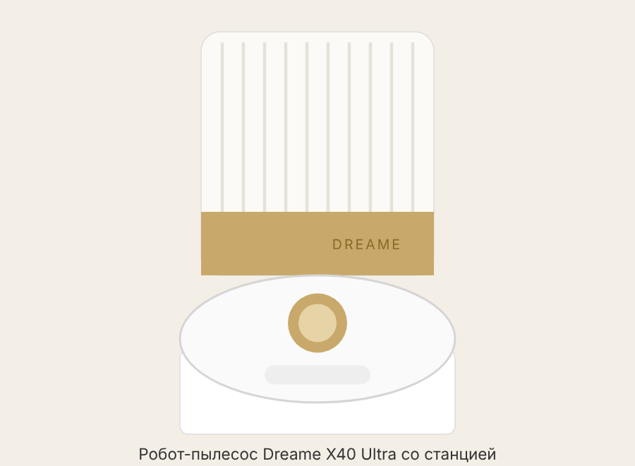
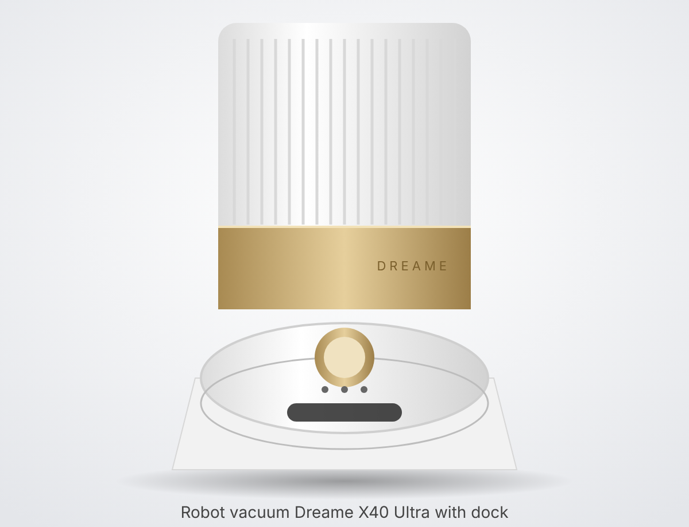
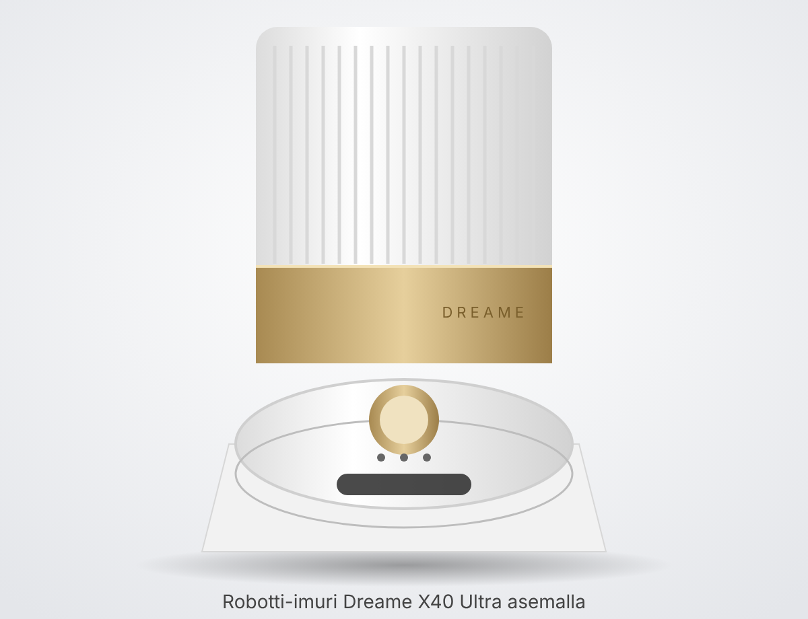

• Dreame X40 Ultra (робот RLX63CE / RLX63CE-2, станция RCXE0307 / RCXE0307-5) и X40 Ultra Complete — это один и тот же робот и одна и та же станция; инструкция у них общая. • Отличие Complete — только дополнительный комплект аксессуаров (Extra Accessory Kit), см. раздел «Комплект». • Цвет и отделка станции (белый корпус, золотистая полоса, верхняя крышка) в инструкции не описываются; верхняя крышка станции — это крышка отсека пылесборника (dust tank cover), под ней мешок для пыли и контейнер моющего средства.
• Базовый X40 Ultra: робот; станция; удлинитель-пандус станции (ramp extension plate); сетевой шнур; основная щётка и её крышка-защита (установлены); боковая щётка; контейнер для пыли с фильтром; 2 держателя швабр; 2 швабры (установлены); 2 мешка для пыли (1–2 установлены); инструмент для чистки; моющий лоток (washboard); отсек автодозирования моющего средства (установлен); моющее средство; инструкция. • Дополнительно в X40 Ultra Complete: основная щётка ×1; боковые щётки ×2; швабры 6 пар (12 шт.); фильтры контейнера пыли ×3; мешки для пыли ×3; моющее средство (по сайту — 1 л). • Комплект для подключения к водопроводу/канализации (water hookup kit) продаётся отдельно и только в некоторых регионах.
• Робот сверху: кнопка точечной уборки, кнопка питания/уборки, кнопка «на базу», индикатор состояния, индикатор Wi‑Fi; под верхней крышкой — контейнер для пыли с фильтром и кнопка сброса (Reset). • Датчики: лазерный дальномер LDS под крышкой, 3D двухлинейные лазеры спереди, AI HD-камера и ИК-камера, датчик края (edge), датчики перепада высоты (cliff), датчик ковра, бампер с окошком. • Снизу: основная щётка под защитной крышкой, выдвижная боковая щётка, ведущие колёса, поворотное колесо, узел швабр MopExtend с держателями и швабрами, контакты зарядки, отверстие автоопорожнения, вход автодолива воды. • Индикатор состояния робота: белый постоянно — уборка/уборка завершена; белый «дышит» — зарядка; оранжевый постоянно — ожидание или пауза при низком заряде; оранжевый «дышит» — зарядка при низком заряде; оранжевый мигает — ошибка. • Индикатор Wi‑Fi: медленно мигает — готов к подключению; быстро мигает — идёт подключение; горит — подключён. • Станция: бак чистой воды и бак грязной воды (в нём поплавок — не давить на него с усилием); под верхней крышкой — гнездо мешка для пыли и выдвижной отсек моющего средства (автодозирование); фильтр; съёмный моющий лоток (washboard) с валиком; пандус; зона сигнала и контакты зарядки; выход автодолива; разъём под комплект водопровода; ниша для шнура, разъём питания и выключатель (I — вкл., O — выкл.). • Индикатор станции: белый — питание подключено; оранжевый — ошибка.
• Ровное открытое место с хорошим сигналом Wi‑Fi; рекомендуется плитка или мрамор (не ковёр). • Свободное пространство: не менее 1,5 м спереди и не менее 5 см с каждой стороны. • Установить удлинитель-пандус, подключить шнур — индикатор станции загорится. • Снять с робота транспортные защитные элементы, установить узел швабр. • Включить робота (удерживать кнопку питания 3 с) и поставить на станцию швабрами к моющему лотку — голосовое сообщение подтвердит подключение. • Снять верхнюю крышку, вытянуть отсек моющего средства, залить фирменное средство, закрыть и вставить до щелчка. • Залить в бак чистой воды обычную холодную/тёплую воду — горячую нельзя (бак может деформироваться), вставить бак на место. • Рабочая температура: от 0 до 40 °C.
• Установить приложение Dreamehome (QR-код на роботе или поиск в магазине приложений). • В приложении нажать «+» вверху справа, отсканировать QR-код робота и следовать подсказкам. • Поддерживается только Wi‑Fi 2,4 ГГц (5 ГГц не подходит). • Карта строится при первой уборке; в приложении есть быстрое построение карты (Fast mapping), многоуровневые карты (до 4 этажей по данным сайта), деление на комнаты. • В приложении настраиваются: автоопорожнение, частота мойки швабр, мойка горячей водой, режим «Не беспокоить» (по умолчанию 22:00–8:00, с завода выключен), детский замок, продолжение уборки после подзарядки.
• Только пылесос: робот на станции снимает (отстёгивает) швабры и пылесосит без них. • Только мойка: робот при необходимости сам надевает швабры, поднимает основную и боковую щётки и моет пол. • Пылесос + мойка: режим по умолчанию при первом использовании швабр. • Мойка после уборки: сначала пылесосит, возвращается, опорожняет контейнер, надевает швабры и моет. • CleanGenius (интеллектуальный режим в приложении): робот сам выбирает параметры; функции повторной мойки швабр, повторного прохода и усиленного режима для крупного мусора (Large Particles Boost, по умолчанию выключен) работают только в CleanGenius. Подробно в бумажной инструкции не описан. • MopExtend / RoboSwing: узел швабр выдвигается и робот «доводит» швабру у стен и мебели; боковая щётка SideReach тоже выдвигается. • Ковры: робот распознаёт ковёр датчиком, поднимает швабры до 10,5 мм для низкого ворса или объезжает ковры; для ворса выше 3 мм рекомендуется обходить средние и длинноворсные ковры (настройка в приложении), либо снимать швабры на станции. Есть интенсивная уборка ковров — два прохода на малой скорости. • Станция моет швабры горячей водой (до 70 °C, 4 уровня температуры) и сушит горячим воздухом.
• Питание/уборка: удержание 3 с — включить/выключить; короткое нажатие — начать уборку. • Во время уборки или возврата любое нажатие — пауза; после 10 мин паузы робот засыпает. • Удержание кнопки питания 10 с — принудительное выключение зависшего робота (затем 3 с — снова включить). • «На базу» (домик): короткое нажатие — отправить на станцию; удержание 3 с — снять детский замок. • Точечная уборка: короткое нажатие в режиме ожидания — уборка квадрата 1,5×1,5 м вокруг робота. • Кнопка Reset под крышкой: удержание 3 с — сброс к заводским настройкам.
• Бак грязной воды: опорожнять и ополаскивать после каждого использования; стенки чистить инструментом из комплекта. • Бак чистой воды: проверять/мыть раз в 2 недели; не заливать горячую воду. • Мешок для пыли: менять примерно раз в 2–4 месяца (по сайту мешка 3,2 л хватает до ~75 дней); снять крышку, потянуть ручку вверх (мешок запечатывается), выбросить, вставить новый. • Контейнер для пыли: чистить по мере надобности; можно промывать водой. • Фильтр контейнера: промывать только чистой водой без средств, не тереть щёткой/пальцем, полностью высушить перед установкой; менять каждые 3–6 месяцев. • Основная щётка: снять защиту (нажать защёлки), вынуть, снять торцевые колпачки, срезать волосы инструментом; менять каждые 6–12 месяцев. • Боковая щётка: открутить отвёрткой, очистить от волос; срок замены в извлечённом тексте инструкции не указан. • Швабры: станция моет их автоматически; менять каждые 1–3 месяца. • Моющий лоток станции: раз в 2 месяца — включить в приложении очистку лотка, вынуть лоток, после набора воды протереть инструментом, станция откачает воду, протереть насухо, снять и промыть валик. • Раз в месяц: протереть зону сигнала станции, датчик ковра, датчики перепада, бампер и его окошко, контакты зарядки, отверстия автоопорожнения, вход автодолива; также LDS, 3D-лазеры, камеры и колёса сухой мягкой тканью. • Хранение: полностью зарядить, выключить, хранить в сухом прохладном месте, подзаряжать минимум раз в 3 месяца.
• Мешок для пыли (Dust Bag) — для станции, 3,2 л. • Фильтр контейнера пыли (Dust Box Filter). • Основная щётка (Main Brush); опционально щётка TriCut (продаётся отдельно). • Боковая щётка (Side Brush). • Швабры (Mop Pad), ставятся на держатели (Mop Pad Holder). • Моющее средство Dreame (Cleaning Solution) — только фирменное; спирт, дезинфекторы и другие жидкости не добавлять. • Артикулы (номера деталей) в инструкции не указаны — искать по названию модели X40 Ultra в магазине Dreame.
• Не включается → поставить на станцию зарядиться; проверить, что температура батареи в рабочем диапазоне (0–40 °C). • Не заряжается → проверить шнур с обеих сторон и выключатель станции; протереть контакты, убрать посторонние предметы. • Не подключается к Wi‑Fi → проверить пароль, сеть 2,4 ГГц, подойти ближе к роутеру, перезапустить приложение. • Не находит станцию → станция включена и не сдвигалась, нет препятствий, протереть зону сигнала; поставить робота вручную. • Застревает перед станцией → 5 см по бокам и 1,5 м спереди свободны, вытереть лишнюю воду, проверить пандус. • Не выключается → снять со станции, удерживать питание 3 с, если не помогло — 10 с. • Медленно заряжается → норма около 4,5 ч с низкого заряда; вне 0–40 °C медленнее; почистить контакты. • Стал громче → почистить/заменить фильтр, убрать застрявшее из щёток, снизить мощность до «Стандарт»/«Тихо». • Странный маршрут → убрать провода и тапочки, высушить пол, протереть окошко бампера и 3D-датчики. • Пропускает комнаты → открыть двери; пороги выше ~2 см не преодолевает; скользкие полы высушить. • Не продолжает уборку после зарядки → выключить «Не беспокоить» или продолжить вручную. • Не опорожняется контейнер → проверить, не полон ли мешок; прочистить каналы автоопорожнения на роботе, станции и контейнере. • Неправильный уровень воды в лотке → проверить и переставить уплотнение бака грязной воды, прочистить слив, использовать только фирменное средство. • Держатель швабр поднят неправильно → снять держатель, убрать посторонние предметы, перезапустить робота. • Вода под баком чистой воды → немного остаточной воды — норма, протереть. • Коды ошибок: числовые коды в инструкции не приводятся — робот сообщает ошибку голосом, оранжевым миганием индикатора и текстом в приложении Dreamehome.
• Сброс Wi‑Fi / новое подключение: заново добавить устройство в приложении Dreamehome («+» → сканировать QR-код) и следовать подсказкам. • Заводские настройки: открыть верхнюю крышку робота и удерживать кнопку Reset 3 с. • Если робот завис: удерживать кнопку питания 10 с, затем включить снова (3 с).
• Робот: RLX63CE / RLX63CE-2; 14,4 В; 75 Вт; зарядка ≈ 4,5 ч; Wi‑Fi 2400–2483,5 МГц. • Станция: RCXE0307 / RCXE0307-5; вход 220–240 В, 50–60 Гц; выход 20 В, 2 А; мощность: опорожнение 700 Вт, мойка горячей водой 1160 Вт, зарядка и сушка 89 Вт. • По данным сайта Dreame: всасывание 12 000 Па; аккумулятор 6400 мА·ч; бак чистой воды 4,5 л; бак грязной воды 4,0 л; мешок 3,2 л; контейнер робота 300 мл; подъём швабр 10,5 мм; мойка водой до 70 °C. • Время работы, вес, размеры и уровень шума в инструкции не указаны.

• Dreame X40 Ultra (robot RLX63CE / RLX63CE-2, base station RCXE0307 / RCXE0307-5) and X40 Ultra Complete are the same robot and the same base station; they share one manual. • The only difference of the Complete is an additional set of accessories (Extra Accessory Kit), see the “Package contents” section. • The colour and finish of the base station (white body, gold stripe, top cover) are not described in the manual; the top cover of the station is the dust tank cover, under which are the dust bag and the cleaning solution container.
• Basic X40 Ultra: robot; base station; ramp extension plate; power cord; main brush and its protective cover (installed); side brush; dust bin with filter; 2 mop pad holders; 2 mop pads (installed); 2 dust bags (1–2 installed); cleaning tool; washboard; automatic detergent dispenser compartment (installed); cleaning solution; user manual. • Additionally in the X40 Ultra Complete: main brush ×1; side brushes ×2; mop pads 6 pairs (12 pcs); dust bin filters ×3; dust bags ×3; cleaning solution (1 l according to the website). • The kit for connecting to the water supply/drain (water hookup kit) is sold separately and only in some regions.
• Robot top: spot cleaning button, power/clean button, “return to base” button, status indicator, Wi‑Fi indicator; under the top cover — dust bin with filter and Reset button. • Sensors: LDS laser distance sensor under the cover, 3D dual-line lasers at the front, AI HD camera and IR camera, edge sensor, cliff sensors, carpet sensor, bumper with window. • Underside: main brush under a protective cover, extendable side brush, drive wheels, swivel wheel, MopExtend mop assembly with holders and mop pads, charging contacts, auto-empty opening, auto water refill inlet. • Robot status indicator: solid white — cleaning/cleaning finished; white “breathing” — charging; solid orange — standby or paused with low battery; orange “breathing” — charging with low battery; orange flashing — error. • Wi‑Fi indicator: flashing slowly — ready to connect; flashing quickly — connecting; solid — connected. • Base station: clean water tank and dirty water tank (with a float inside — do not press on it with force); under the top cover — dust bag slot and pull-out cleaning solution compartment (auto dosing); filter; removable washboard with roller; ramp; signal area and charging contacts; auto refill outlet; connector for the water hookup kit; cord storage, power socket and switch (I — on, O — off). • Station indicator: white — power connected; orange — error.
• A level, open spot with a good Wi‑Fi signal; tile or marble is recommended (not carpet). • Clear space: at least 1.5 m in front and at least 5 cm on each side. • Fit the ramp extension plate, connect the cord — the station indicator lights up. • Remove the transport protection from the robot, fit the mop assembly. • Switch the robot on (hold the power button for 3 s) and place it on the station with the mops towards the washboard — a voice message confirms the connection. • Remove the top cover, pull out the cleaning solution compartment, fill it with the original Dreame solution, close it and push it in until it clicks. • Fill the clean water tank with ordinary cold/lukewarm water — not hot (the tank may deform), and put the tank back in place. • Operating temperature: 0 to 40 °C.
• Install the Dreamehome app (QR code on the robot or search in the app store). • In the app, tap “+” at the top right, scan the robot’s QR code and follow the prompts. • Only 2.4 GHz Wi‑Fi is supported (5 GHz will not work). • The map is built during the first cleaning; the app has Fast mapping, multi-level maps (up to 4 floors according to the website) and room division. • Settings in the app: auto-empty, mop washing frequency, hot-water mop washing, Do Not Disturb mode (default 22:00–8:00, off from the factory), child lock, resuming cleaning after recharging.
• Vacuum only: the robot detaches the mops at the station and vacuums without them. • Mop only: the robot attaches the mops by itself if necessary, lifts the main and side brushes and mops the floor. • Vacuum + mop: the default mode when the mops are first used. • Mop after vacuum: first vacuums, returns, empties the dust bin, attaches the mops and mops. • CleanGenius (intelligent mode in the app): the robot chooses the settings itself; the re-mop, re-clean and boost for large debris functions (Large Particles Boost, off by default) work only in CleanGenius. Not described in detail in the printed manual. • MopExtend / RoboSwing: the mop assembly extends and the robot works the mop along walls and furniture; the SideReach side brush also extends. • Carpets: the robot recognises carpet with its sensor, lifts the mops up to 10.5 mm for low pile or avoids carpets; for pile higher than 3 mm it is recommended to avoid medium- and long-pile carpets (setting in the app), or to detach the mops at the station. There is intensive carpet cleaning — two passes at low speed. • The station washes the mops with hot water (up to 70 °C, 4 temperature levels) and dries them with hot air.
• Power/clean: hold 3 s — switch on/off; short press — start cleaning. • During cleaning or returning, any press — pause; after 10 min of pause the robot goes to sleep. • Hold the power button for 10 s — force a frozen robot to switch off (then 3 s — switch it on again). • “Return to base” (house icon): short press — send it to the station; hold 3 s — release the child lock. • Spot cleaning: short press in standby — cleans a 1.5×1.5 m square around the robot. • Reset button under the cover: hold 3 s — reset to factory settings.
• Dirty water tank: empty and rinse after each use; clean the walls with the tool from the kit. • Clean water tank: check/wash every 2 weeks; do not fill with hot water. • Dust bag: replace roughly every 2–4 months (according to the website a 3.2 l bag lasts up to ~75 days); remove the cover, pull the handle up (the bag seals itself), throw it away, insert a new one. • Dust bin: clean as needed; it can be rinsed with water. • Dust bin filter: rinse only with clean water without detergents, do not rub with a brush/finger, dry completely before fitting; replace every 3–6 months. • Main brush: remove the cover (press the latches), take it out, remove the end caps, cut off hair with the tool; replace every 6–12 months. • Side brush: unscrew with a screwdriver, remove hair; the replacement interval is not given in the extracted manual text. • Mop pads: the station washes them automatically; replace every 1–3 months. • Station washboard: every 2 months — start washboard cleaning in the app, remove the washboard, after the water is filled wipe it with the tool, the station pumps out the water, wipe dry, remove and rinse the roller. • Once a month: wipe the station’s signal area, the carpet sensor, cliff sensors, bumper and its window, charging contacts, auto-empty openings, auto refill inlet; also the LDS, 3D lasers, cameras and wheels with a dry soft cloth. • Storage: charge fully, switch off, store in a dry, cool place, recharge at least once every 3 months.
• Dust Bag — for the station, 3.2 l. • Dust Box Filter. • Main Brush; optionally the TriCut brush (sold separately). • Side Brush. • Mop Pad, fitted on Mop Pad Holders. • Dreame Cleaning Solution — original only; do not add alcohol, disinfectants or other liquids. • Part numbers are not given in the manual — search by the model name X40 Ultra in the Dreame store.
• Will not switch on → put it on the station to charge; check that the battery temperature is within the operating range (0–40 °C). • Does not charge → check the cord at both ends and the station switch; wipe the contacts, remove foreign objects. • Will not connect to Wi‑Fi → check the password and that the network is 2.4 GHz, move closer to the router, restart the app. • Cannot find the station → station switched on and not moved, no obstacles, wipe the signal area; place the robot on it by hand. • Gets stuck in front of the station → 5 cm on the sides and 1.5 m in front are clear, wipe off excess water, check the ramp. • Will not switch off → take it off the station, hold the power button for 3 s; if that does not help — 10 s. • Charges slowly → normal is about 4.5 h from low battery; outside 0–40 °C it is slower; clean the contacts. • Has become louder → clean/replace the filter, remove anything stuck in the brushes, reduce the suction power to “Standard”/“Quiet”. • Strange route → remove cables and slippers, dry the floor, wipe the bumper window and the 3D sensors. • Skips rooms → open the doors; it cannot climb thresholds higher than ~2 cm; dry slippery floors. • Does not resume cleaning after charging → turn off Do Not Disturb or resume manually. • Dust bin is not emptied → check whether the bag is full; clear the auto-empty channels on the robot, station and dust bin. • Wrong water level in the washboard → check and refit the dirty water tank seal, clear the drain, use only the original solution. • Mop holder raised incorrectly → remove the holder, remove foreign objects, restart the robot. • Water under the clean water tank → a little residual water is normal, wipe it off. • Error codes: the manual does not list numeric codes — the robot reports an error by voice, by the orange flashing indicator and with text in the Dreamehome app.
• Wi‑Fi reset / new connection: add the device again in the Dreamehome app (“+” → scan the QR code) and follow the prompts. • Factory settings: open the robot’s top cover and hold the Reset button for 3 s. • If the robot freezes: hold the power button for 10 s, then switch it on again (3 s).
• Robot: RLX63CE / RLX63CE-2; 14.4 V; 75 W; charging ≈ 4.5 h; Wi‑Fi 2400–2483.5 MHz. • Base station: RCXE0307 / RCXE0307-5; input 220–240 V, 50–60 Hz; output 20 V, 2 A; power: emptying 700 W, hot-water washing 1160 W, charging and drying 89 W. • According to the Dreame website: suction 12,000 Pa; battery 6400 mAh; clean water tank 4.5 l; dirty water tank 4.0 l; bag 3.2 l; robot dust bin 300 ml; mop lift 10.5 mm; washing with water up to 70 °C. • Run time, weight, dimensions and noise level are not given in the manual.

• Dreame X40 Ultra (robotti RLX63CE / RLX63CE-2, asema RCXE0307 / RCXE0307-5) ja X40 Ultra Complete ovat sama robotti ja sama asema; niillä on yhteinen käyttöohje. • Complete-mallin ainoa ero on ylimääräinen tarvikesarja (Extra Accessory Kit), katso kohta ”Pakkauksen sisältö”. • Aseman väriä ja viimeistelyä (valkoinen runko, kullanvärinen raita, yläkansi) ei kuvata ohjeessa; aseman yläkansi on pölysäiliön kansi (dust tank cover), jonka alla ovat pölypussi ja pesuainesäiliö.
• Perus-X40 Ultra: robotti; asema; aseman jatkoluiska (ramp extension plate); virtajohto; pääharja ja sen suojakansi (asennettu); sivuharja; pölysäiliö ja suodatin; 2 mopinpidikettä; 2 mopintyynyä (asennettu); 2 pölypussia (1–2 asennettu); puhdistustyökalu; pesualusta (washboard); pesuaineen automaattinen annostelulokero (asennettu); pesuaine; käyttöohje. • Lisäksi X40 Ultra Complete -mallissa: pääharja ×1; sivuharjat ×2; mopintyynyt 6 paria (12 kpl); pölysäiliön suodattimet ×3; pölypussit ×3; pesuaine (verkkosivujen mukaan 1 l). • Vesijohtoon/viemäriin liittämiseen tarkoitettu sarja (water hookup kit) myydään erikseen ja vain joillakin alueilla.
• Robotin yläpuoli: pistesiivouspainike, virta-/siivouspainike, ”kotiin”-painike, tilan merkkivalo, Wi‑Fi-merkkivalo; yläkannen alla — pölysäiliö suodattimineen ja nollauspainike (Reset). • Anturit: LDS-laseretäisyysanturi kannen alla, 3D-kaksoislinjalaserit edessä, tekoälyllä toimiva HD-kamera ja IR-kamera, reuna-anturi (edge), putoamisanturit (cliff), mattoanturi, ikkunallinen törmäyspuskuri. • Alapuoli: pääharja suojakannen alla, ulos liukuva sivuharja, vetopyörät, kääntyvä pyörä, MopExtend-mopiyksikkö pidikkeineen ja mopintyynyineen, latauskoskettimet, automaattisen tyhjennyksen aukko, automaattisen vedentäytön tuloaukko. • Robotin tilan merkkivalo: valkoinen palaa jatkuvasti — siivous/siivous valmis; valkoinen ”hengittää” — lataus; oranssi palaa jatkuvasti — valmiustila tai tauko akun ollessa vähissä; oranssi ”hengittää” — lataus akun ollessa vähissä; oranssi vilkkuu — virhe. • Wi‑Fi-merkkivalo: vilkkuu hitaasti — valmis yhdistämään; vilkkuu nopeasti — yhdistää; palaa — yhdistetty. • Asema: puhdasvesisäiliö ja likavesisäiliö (sen sisällä on uimuri — älä paina sitä voimalla); yläkannen alla — pölypussin paikka ja ulos vedettävä pesuainelokero (automaattinen annostelu); suodatin; irrotettava pesualusta (washboard) teloineen; luiska; signaalialue ja latauskoskettimet; automaattisen täytön lähtöaukko; liitin vesijohtosarjalle; johtosyvennys, virtaliitäntä ja kytkin (I — päällä, O — pois). • Aseman merkkivalo: valkoinen — virta kytketty; oranssi — virhe.
• Tasainen, avoin paikka, jossa on hyvä Wi‑Fi-signaali; suositellaan laattaa tai marmoria (ei mattoa). • Vapaata tilaa: vähintään 1,5 m edessä ja vähintään 5 cm kummallakin sivulla. • Asenna jatkoluiska, kytke johto — aseman merkkivalo syttyy. • Poista robotista kuljetussuojat, asenna mopiyksikkö. • Käynnistä robotti (pidä virtapainiketta painettuna 3 s) ja aseta se asemalle mopit pesualustaa kohti — ääniviesti vahvistaa yhteyden. • Irrota yläkansi, vedä pesuainelokero ulos, kaada siihen alkuperäistä pesuainetta, sulje ja työnnä paikalleen, kunnes se napsahtaa. • Täytä puhdasvesisäiliö tavallisella kylmällä/haalealla vedellä — ei kuumalla (säiliö voi vääntyä), ja aseta säiliö takaisin paikalleen. • Käyttölämpötila: 0–40 °C.
• Asenna Dreamehome-sovellus (robotissa oleva QR-koodi tai haku sovelluskaupasta). • Napauta sovelluksessa oikeassa yläkulmassa ”+”, skannaa robotin QR-koodi ja seuraa ohjeita. • Vain 2,4 GHz:n Wi‑Fi on tuettu (5 GHz ei käy). • Kartta luodaan ensimmäisen siivouksen aikana; sovelluksessa on nopea kartoitus (Fast mapping), monikerroskartat (verkkosivujen mukaan enintään 4 kerrosta) ja jako huoneisiin. • Sovelluksessa säädetään: automaattinen tyhjennys, mopien pesutiheys, mopien pesu kuumalla vedellä, Älä häiritse -tila (oletus 22.00–8.00, tehtaalta pois päältä), lapsilukko, siivouksen jatkaminen latauksen jälkeen.
• Vain imurointi: robotti irrottaa mopit asemalla ja imuroi ilman niitä. • Vain moppaus: robotti kiinnittää tarvittaessa mopit itse, nostaa pää- ja sivuharjan ja moppaa lattian. • Imurointi + moppaus: oletustila, kun mopit otetaan ensimmäisen kerran käyttöön. • Moppaus imuroinnin jälkeen: ensin imuroi, palaa asemalle, tyhjentää pölysäiliön, kiinnittää mopit ja moppaa. • CleanGenius (sovelluksen älytila): robotti valitsee asetukset itse; mopien uudelleenpesu, uusintakierros ja suurten roskien tehotila (Large Particles Boost, oletuksena pois) toimivat vain CleanGenius-tilassa. Painetussa ohjeessa sitä ei kuvata tarkemmin. • MopExtend / RoboSwing: mopiyksikkö liukuu ulos ja robotti ulottaa mopin seinien ja huonekalujen viereen; myös SideReach-sivuharja liukuu ulos. • Matot: robotti tunnistaa maton anturilla, nostaa mopit jopa 10,5 mm matalanukkaisilla matoilla tai kiertää matot; yli 3 mm:n nukan kohdalla on suositeltavaa kiertää keski- ja pitkänukkaiset matot (asetus sovelluksessa) tai irrottaa mopit asemalla. Käytössä on myös mattojen tehosiivous — kaksi kierrosta hitaalla nopeudella. • Asema pesee mopit kuumalla vedellä (jopa 70 °C, 4 lämpötilatasoa) ja kuivaa ne lämpimällä ilmalla.
• Virta/siivous: pito 3 s — päälle/pois; lyhyt painallus — siivouksen aloitus. • Siivouksen tai paluun aikana mikä tahansa painallus — tauko; 10 minuutin tauon jälkeen robotti siirtyy lepotilaan. • Virtapainikkeen pito 10 s — jumittuneen robotin pakotettu sammutus (sen jälkeen 3 s — uudelleenkäynnistys). • ”Kotiin” (talo): lyhyt painallus — lähetä asemalle; pito 3 s — lapsilukon poisto. • Pistesiivous: lyhyt painallus valmiustilassa — siivoaa 1,5×1,5 m:n neliön robotin ympäriltä. • Reset-painike kannen alla: pito 3 s — tehdasasetusten palautus.
• Likavesisäiliö: tyhjennä ja huuhtele jokaisen käytön jälkeen; puhdista seinämät pakkauksen työkalulla. • Puhdasvesisäiliö: tarkista/pese 2 viikon välein; älä täytä kuumalla vedellä. • Pölypussi: vaihda noin 2–4 kuukauden välein (verkkosivujen mukaan 3,2 l:n pussi riittää n. 75 päivää); irrota kansi, vedä kahvasta ylös (pussi sulkeutuu), heitä pois, aseta uusi. • Pölysäiliö: puhdista tarpeen mukaan; sen voi huuhdella vedellä. • Pölysäiliön suodatin: huuhtele vain puhtaalla vedellä ilman pesuaineita, älä hankaa harjalla/sormella, kuivaa kokonaan ennen asentamista; vaihda 3–6 kuukauden välein. • Pääharja: irrota suojus (paina salpoja), ota harja pois, irrota päätykorkit, leikkaa hiukset työkalulla; vaihda 6–12 kuukauden välein. • Sivuharja: irrota ruuvimeisselillä, poista hiukset; vaihtoväliä ei mainita ohjeesta poimitussa tekstissä. • Mopintyynyt: asema pesee ne automaattisesti; vaihda 1–3 kuukauden välein. • Aseman pesualusta: 2 kuukauden välein — käynnistä pesualustan puhdistus sovelluksesta, ota pesualusta pois, pyyhi se työkalulla veden täytön jälkeen, asema pumppaa veden pois, kuivaa, irrota ja huuhtele tela. • Kerran kuukaudessa: pyyhi aseman signaalialue, mattoanturi, putoamisanturit, puskuri ja sen ikkuna, latauskoskettimet, automaattisen tyhjennyksen aukot, automaattisen täytön tuloaukko; myös LDS, 3D-laserit, kamerat ja pyörät kuivalla pehmeällä liinalla. • Säilytys: lataa täyteen, sammuta, säilytä kuivassa ja viileässä paikassa, lataa vähintään 3 kuukauden välein.
• Pölypussi (Dust Bag) — asemaan, 3,2 l. • Pölysäiliön suodatin (Dust Box Filter). • Pääharja (Main Brush); lisävarusteena TriCut-harja (myydään erikseen). • Sivuharja (Side Brush). • Mopintyynyt (Mop Pad), kiinnitetään pidikkeisiin (Mop Pad Holder). • Dreame-pesuaine (Cleaning Solution) — vain alkuperäinen; älä lisää alkoholia, desinfiointiaineita tai muita nesteitä. • Tuotenumeroita (osanumeroita) ei ole ohjeessa — hae Dreamen kaupasta mallinimellä X40 Ultra.
• Ei käynnisty → aseta asemalle latautumaan; tarkista, että akun lämpötila on käyttöalueella (0–40 °C). • Ei lataudu → tarkista johto molemmista päistä ja aseman kytkin; pyyhi koskettimet, poista vieraat esineet. • Ei yhdisty Wi‑Fiin → tarkista salasana, 2,4 GHz:n verkko, siirry lähemmäs reititintä, käynnistä sovellus uudelleen. • Ei löydä asemaa → asema päällä eikä sitä ole siirretty, ei esteitä, pyyhi signaalialue; aseta robotti asemalle käsin. • Juuttuu aseman eteen → 5 cm sivuilla ja 1,5 m edessä vapaana, pyyhi ylimääräinen vesi, tarkista luiska. • Ei sammu → nosta pois asemalta, pidä virtapainiketta 3 s, jos ei auta — 10 s. • Latautuu hitaasti → normaali aika on noin 4,5 h tyhjästä akusta; 0–40 °C:n ulkopuolella hitaammin; puhdista koskettimet. • Ääni on voimistunut → puhdista/vaihda suodatin, poista harjoihin juuttuneet roskat, laske imuteho tasolle ”Vakio”/”Hiljainen”. • Outo reitti → siivoa johdot ja tossut pois, kuivaa lattia, pyyhi puskurin ikkuna ja 3D-anturit. • Jättää huoneita väliin → avaa ovet; yli n. 2 cm:n kynnysten yli se ei pääse; kuivaa liukkaat lattiat. • Ei jatka siivousta latauksen jälkeen → kytke Älä häiritse -tila pois tai jatka käsin. • Pölysäiliö ei tyhjene → tarkista, onko pussi täynnä; puhdista automaattisen tyhjennyksen kanavat robotista, asemasta ja pölysäiliöstä. • Väärä vedenpinta pesualustassa → tarkista ja asenna likavesisäiliön tiiviste uudelleen, puhdista poistoaukko, käytä vain alkuperäistä pesuainetta. • Mopinpidike nousee väärin → irrota pidike, poista vieraat esineet, käynnistä robotti uudelleen. • Vettä puhdasvesisäiliön alla → vähäinen jäännösvesi on normaalia, pyyhi pois. • Virhekoodit: ohjeessa ei ole numeerisia koodeja — robotti ilmoittaa virheestä äänellä, oranssina vilkkuvalla merkkivalolla ja tekstinä Dreamehome-sovelluksessa.
• Wi‑Fi-nollaus / uusi yhteys: lisää laite uudelleen Dreamehome-sovelluksessa (”+” → skannaa QR-koodi) ja seuraa ohjeita. • Tehdasasetukset: avaa robotin yläkansi ja pidä Reset-painiketta painettuna 3 s. • Jos robotti jumittuu: pidä virtapainiketta painettuna 10 s ja käynnistä sitten uudelleen (3 s).
• Robotti: RLX63CE / RLX63CE-2; 14,4 V; 75 W; lataus ≈ 4,5 h; Wi‑Fi 2400–2483,5 MHz. • Asema: RCXE0307 / RCXE0307-5; tulo 220–240 V, 50–60 Hz; lähtö 20 V, 2 A; teho: tyhjennys 700 W, pesu kuumalla vedellä 1160 W, lataus ja kuivaus 89 W. • Dreamen verkkosivujen mukaan: imuteho 12 000 Pa; akku 6400 mAh; puhdasvesisäiliö 4,5 l; likavesisäiliö 4,0 l; pussi 3,2 l; robotin pölysäiliö 300 ml; mopien nosto 10,5 mm; pesu vedellä jopa 70 °C. • Käyttöaikaa, painoa, mittoja ja melutasoa ei mainita ohjeessa.